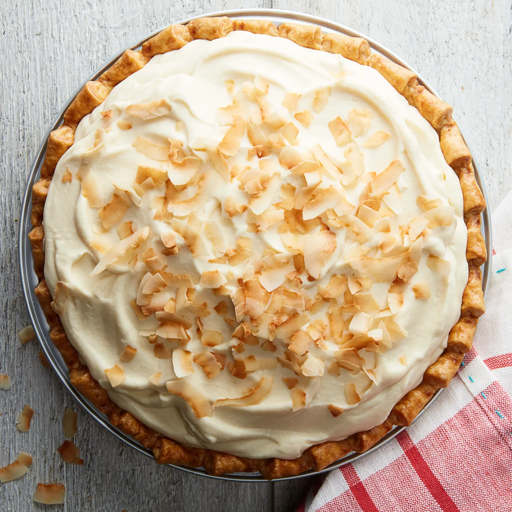

Cream Pie

Description
Cream pies are a delicious dessert that are sure to satisfy any sweet tooth. They consist of a flaky pastry crust filled with a rich and creamy filling. The creamy filling can be made from a variety of ingredients such as custard, whipped cream, or even mousse. The possibilities are endless, and the result is always a decadent treat that will have your taste buds begging for more.
Making a cream pie is not just about the filling, it's also about the crust. A good crust should be flaky and buttery, providing the perfect balance of texture and flavor to complement the creamy filling. Whether you prefer your crust to be made from scratch or store-bought, the key is to make sure it's cooked to perfection. You can even add a little extra excitement by playing around with different crust flavors and textures, such as graham cracker or chocolate. So why not give in to your desires and indulge in a slice of cream pie tonight?
Ingredients:
- Pastry crust (store-bought or homemade)
- 1 cup heavy cream
- 1 cup milk
- 1/2 cup sugar
- 4 egg yolks
- 1 tablespoon cornstarch
- 1 teaspoon vanilla extract
- Pinch of salt
Optional:
- Whipped cream for topping
- Fruits for garnishing
Instructions:
- Preheat your oven to 350°F (175°C). Roll out your pastry crust and place it in a 9-inch pie dish. Trim the edges and prick the bottom of the crust with a fork. Bake the crust for about 10-15 minutes, or until lightly golden brown.
- In a medium saucepan, combine the cream, milk, sugar, egg yolks, cornstarch, vanilla extract, and salt. Cook over medium heat, stirring constantly, until the mixture thickens and comes to a boil. Remove from heat and let it cool slightly.
- Pour the custard mixture into the baked crust. Level the surface with a spatula. Place the pie in the refrigerator and let it cool completely, for about 2-3 hours or until set.
- Once cooled, you can garnish the pie with whipped cream and fruits if desired.
- Serve and enjoy!
Previous Page